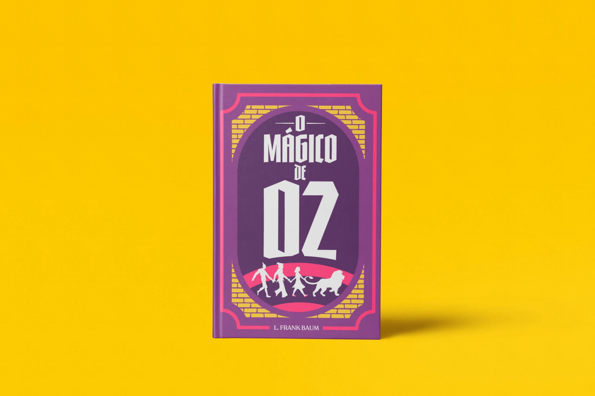
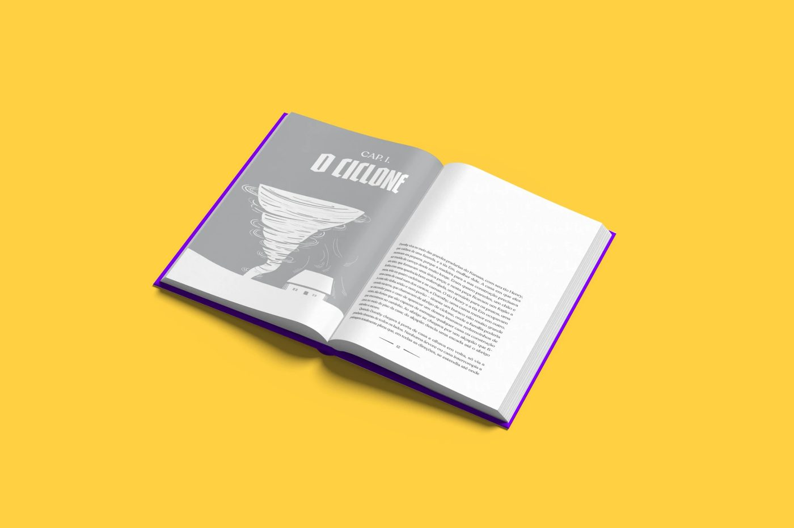
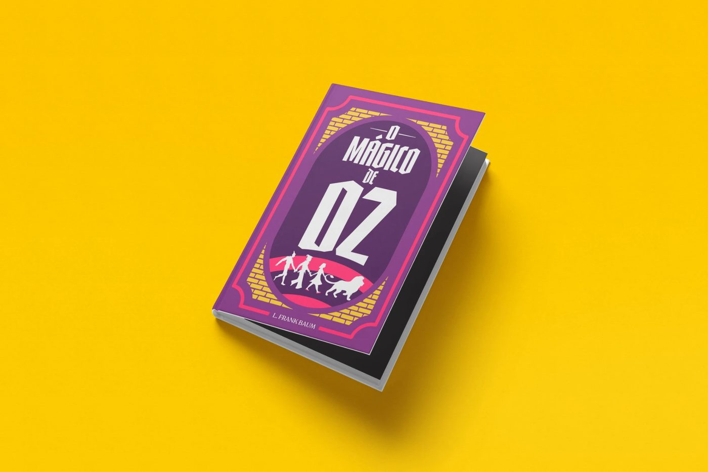
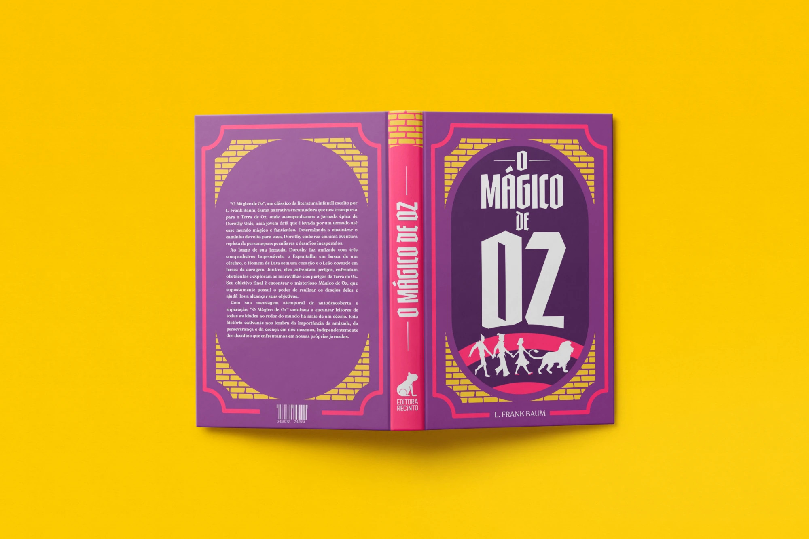
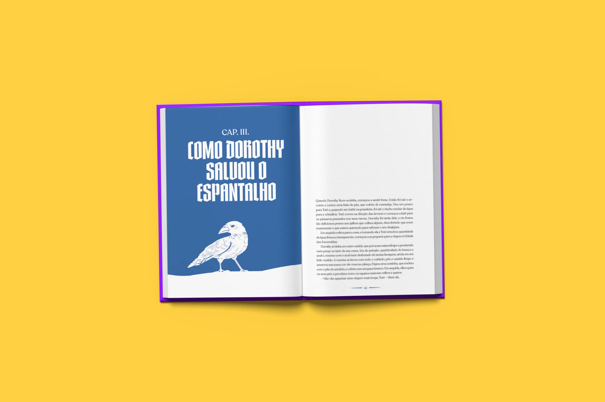
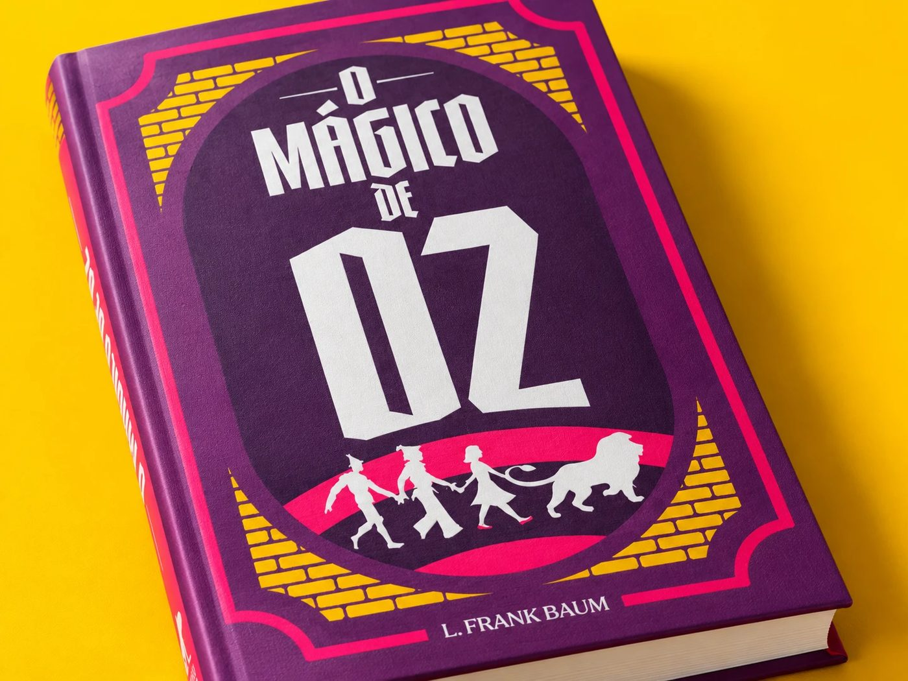
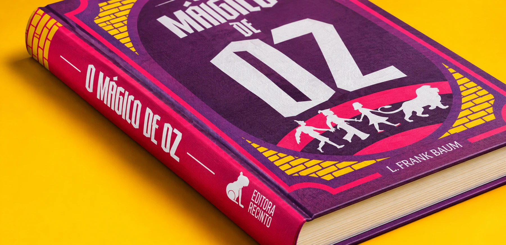
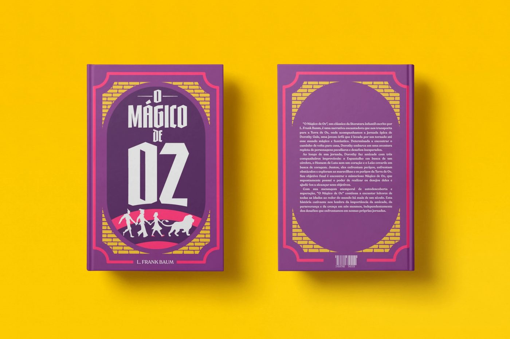
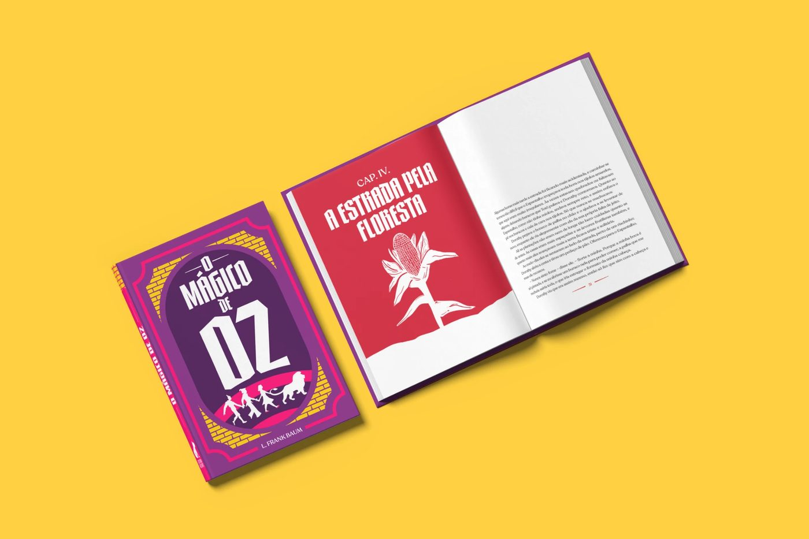

Project
Book Design
O Mágico de Oz
A book design project based on The Wonderful Wizard of Oz. Its visual development includes elements from the story's imaginary world, such as the Yellow Brick Road, natural landscapes, and the Emerald City. These elements serve as visual references for the book's editorial presentation.
Um projeto de design de livro baseado na obra O Mágico de Oz. Seu desenvolvimento visual contempla elementos do universo imaginário da história, como a estrada de tijolos amarelos, paisagens naturais e a Cidade das Esmeraldas. Esses elementos servem como referências visuais para a apresentação editorial do livro.

Concept
“There is no place like home.”
— L. Frank Baum, The Wonderful Wizard of Oz
The visual direction draws from the fantastic landscapes of The Wonderful Wizard of Oz. The Yellow Brick Road and the distant Emerald City establish recognizable elements of the story's universe. Natural scenery and imaginative environments contribute to its visual atmosphere. Together, these references provide a foundation for the book design.
A direção visual parte das paisagens fantásticas de O Mágico de Oz. A estrada de tijolos amarelos e a Cidade das Esmeraldas ao longe estabelecem elementos reconhecíveis do universo da história. Cenários naturais e ambientes imaginativos contribuem para sua atmosfera visual. Juntas, essas referências constroem a base para o projeto editorial.


Visual identity
[Provisório] The cover was built like a stage for the journey: an ornamental frame inspired by classic editions, the yellow brick road surrounding an arched window, the hand-drawn title lettering and the four travelers walking together toward the Emerald City.
[Provisório] A capa foi construída como um palco para a jornada: uma moldura ornamental inspirada em edições clássicas, a estrada de tijolos amarelos em volta de uma janela em arco, o lettering desenhado do título e os quatro viajantes caminhando juntos rumo à Cidade das Esmeraldas.






Read the bookLeia o livro
Click the page, use the arrows or swipe to turn. Clique na página, use as setas ou arraste para virar.
Credits
- Book Design
- Victor Hugo Fávaro
Next projectBoard Game
Metrópole→